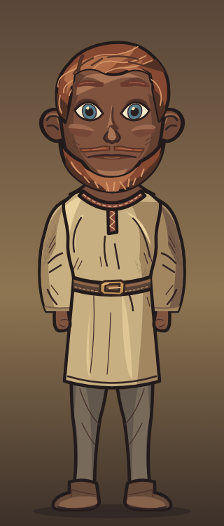
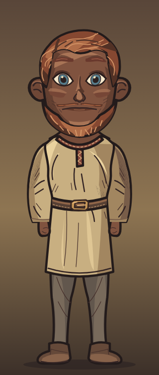
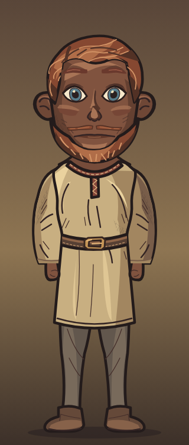

<!doctype html><html lang="ru"><meta charset="utf-8"><meta name="viewport" content="width=device-width,initial-scale=1"><title>Высота рта</title><style>body{font:16px system-ui;background:#25201b;color:#eee2cd;margin:0 auto;max-width:1280px;padding:1rem}
    a{color:#f4ca91}h1,h2{font:700 1.7rem Georgia,serif}nav ul{columns:3}.grid{display:grid;gap:1rem;
    grid-template-columns:repeat(auto-fit,minmax(230px,1fr))}article{min-width:0;border:1px solid #655343;
    background:#312821;padding:.6rem;border-radius:5px}a img{vertical-align:middle}img{max-width:100%;height:auto}
    .character{display:block;max-height:460px;width:auto;margin:auto}.card{width:32px;height:32px}
    .detail{display:block;width:100%;margin:.35rem 0}.compare{display:flex;align-items:flex-start;gap:.5rem}
    .compare a{flex:1;min-width:0}small{color:#dccab0}code{overflow-wrap:anywhere}@media(max-width:730px){nav ul{columns:1}}</style><main><nav><a href="index.html">Все разделы</a></nav><h1>Высота рта</h1><div class="grid"><article id="appearance__mouth_height__standard"><h3>Средняя</h3><code>standard</code><a href="images/f59ad74fc84d3b689e70cfd4afc9070729f85531fc6c000f8f2e36983a9fb52b.png"></a><p><a href="images/3d9704ffd48faff194606efe6cf9a4cd040e7c34fab7dc357ed6e6cf05cca180.png"></a> <small>32 × 32</small></p></article>
<article id="appearance__mouth_height__high"><h3>Высокая</h3><code>high</code><a href="images/b653f89b060d2be2ccea0cee3d5504e65203a65bdbffa77f767bdbcfe5a55868.png"></a><p><a href="images/1777286adf590a3eaaa51e044c3f142a77b70ad065dc3dd6f37f59c392628caf.png"></a> <small>32 × 32</small></p></article>
<article id="appearance__mouth_height__low"><h3>Низкая</h3><code>low</code><a href="images/f37b4a85b0a96f886818f97a491bca2e3ae1ba2f616f4a0fdae2a2453700ee70.png"></a><p><a href="images/0369d53b2f6341ab26ac14c79e8fe968dd12c7e13d22c9d72d9783170bc2d8a3.png"></a> <small>32 × 32</small></p></article></div></main></html>
